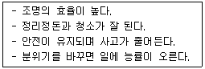
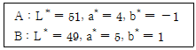
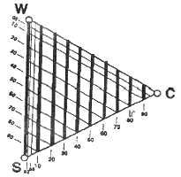
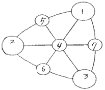

컬러리스트산업기사 (2010-03-07 기출문제)
1과목: 색채심리
1. 향수 용기 및 포장디자인 시 향의 종류와 색채가 바르게 연결된 것은?
- 시원하고 상쾌한 민트 향 – golden yellow
- 섬세하고 에로틱한 향 – 흰색, 금색
- 가볍고 강한(spicy)향 – 빨강, 검정
- 향과 색채이미지는 관련성이 없다.
(정답률: 알수없음)

2. 다음 중 색채심리를 이용한 배색 중 틀린 것은?
- 자동차의 바깥부분에 따뜻한 색 계통을 칠하면 눈에 잘 띈다.
- 실내의 천장을 가장 밝게 하고, 중간부분을 윗벽보다 어둡게 하며, 바닥은 그보다 더 어둡게 한다.
- 백색, 회색, 흑색을 밝음 → 어두움 순서로 세로로 늘어놓고 바라보면 안정감이 있다.
- 맨홀 공사로 표지판을 세웠을 때 청록색이나 파란색 계통의 차가운 색을 사용한다.
(정답률: 알수없음)
3. 다음 조사를 위한 표본 크기에 대한 설명 중 가장 부적합한 것은?
- 표본의 오차는 표본을 뽑게 되는 모집단의 크기에 따라 크게 달라진다.
- 표본의 사례수(크기)는 오차와 관련되어 있다.
- 적정 표본 크기는 허용오차 범위에 의해 달라진다.
- 전문석이 부족한 연구자들은 선행연구의 표본 크기를 고려하여 사례수를 결정한다.
(정답률: 알수없음)
4. 색채의 연상과 상징에 대한 설명이 틀린 것은?
- 색채 연상은 색의 인상에 의해 그것과 관계있는 사물이나 사건 또는 경험을 떠올리는 것이다.
- 색의 상징성에는 언어로는 표현하기 어려운 공간 감각이나 사회적, 종교적 규범 같은 추상적 개념을 색으로 표현한다는 특징이 있다.
- 구체적 연상은 일반적으로 색의 상징이라고 한다.
- 교통신호의 색이나 안전색채 등은 국제적으로 공통되는 의미를 가진 색으로서 한 가지의 상징적 의미를 활용한 예이다.
(정답률: 알수없음)
5. 연속 배색에 대한 설명 중 옳은 것은?
- 애매한 색과 색 사이에 뚜렷한 한 가지 색을 삽입하는 배색이다.
- 색상이나 명도, 채도, 톤 등이 단계적으로 변화되는 배색이다.
- 2색 이상을 사용하여 되풀이하고 반복함으로써 융화성을 높이는 배색이다.
- 단조로운 배색에 대조색을 추가함으로써 전체의 상태를 돋보이게 하는 배색이다.
(정답률: 알수없음)
6. 다음 중 환경색채의 영향에 대한 설명이 틀린 것은?
- 인간과 계속적인 상호작용을 한다.
- 점진적으로 지역의 자연적, 인공적인 특징을 형성한다.
- 지역의 거주자들에게는 특별한 영향을 미치지 않는다.
- 색채조절에 따라 사무실의 업무능률과 향상성을 조절할 수 있다.
(정답률: 알수없음)
7. 색채의 연상에 관한 내용 중 틀린 것은?
- 색채의 연상에는 구체적 연상과 추상적 연상이 있다.
- 색채의 연상은 경험적이기 때문에 기억색과 밀접한 관련을 갖는다.
- 색채의 연상은 경험과 연령에 따라서 변화하지 않는다.
- 색채의 연상은 생활양식이나 문화적인 배경, 그리고 지역과 풍토 등에 따라서 개인차가 있다.
(정답률: 알수없음)
8. 다음 색의 연상에 관한 설명 중 잘못된 것은?
- 빨강, 주황은 식욕을 증진시키는데 효과적인 색이다.
- 검정색은 죽음을 연상시키므로 산업제품의 색으로는 부적합하다.
- 금속색은 첨단적, 현대적인 이미지를 나타낸다.
- 파랑, 하늘색 등은 일반적으로 청결한 이미지를 나타낸다.
(정답률: 알수없음)
9. 다음 중 컬러 피라미드 테스트의 색채 의미와 거리가 먼 것은?
- 빨강 : 충동적인 감정을 일으키는 색이다.
- 녹색 : 외향적인 색으로 정서적 욕구가 강하고 그것을 밖으로 쉽게 표현하는 사람이 많이 사용한다.
- 보라 : 불안과 긴장의 지표로 사용량이 많은 경우에는 적응 불량과 미성숙을 나타낸다.
- 파랑 : 감정통제의 색으로 진정효과가 있다.
(정답률: 알수없음)
10. 무채색, 금색, 은색 등의 색을 삽입하여 배색의 미적효과를 높일 수 있는 배색은?
- 반대 색상 배색
- 톤온톤 배색
- 톤인톤 배색
- 세퍼레이션 배색
(정답률: 알수없음)
11. 다음 중 용도에 맞는 실내분위기 조성을 위한 색채효과의 적용이 잘못된 것은?
- 로맨틱한 분위기 – 중명도의 회색, dark tone의 파랑
- 식욕촉진 – vivid tone의 주황, 노랑, 빨강
- 자연의 휴식공간 – light tone의 녹색, 연두
- 사치스러운 분위기 – 금색, vivid tone의 보라
(정답률: 알수없음)
12. 기억색의 설명으로 옳은 것은?
- 대상에 대한 무의식적인 추론에 의해 결정되는 색
- 대상물체의 색채가 변하지 않고 그대로 유지된다고 지각하는 것
- 색채의 시각적 효과
- 착시현상에 의해 일어나는 색 경험
(정답률: 알수없음)
13. 비콜로 배색에 대한 설명으로 틀린 것은?
- 비콜로란 바이컬러(Bicolor)와 같은 의미이다.
- 텍스타일의 배색에서 대중적인 배색을 말한다.
- 소재의 바탕색을 베이스로 하고 한 색을 무늬색으로 프린트 한 경우이다.
- 프랑스 국기가 대표적인 예이다.
(정답률: 알수없음)
14. 두 색 또는 다색의 배색에서 대비가 지나치게 강할 경우 대립을 완화시키기 위해 색과 색 사이에 삽입하여 보편적으로 사용하는 색이 아닌 것은?
- 흰색
- 검정
- 회색
- 순색
(정답률: 알수없음)
15. 두드러지지 않은 어두운 톤 배색의 경우, 대조적인 고명도, 고채도 색을 소량 추가함으로서 긴장감과 포인트를 주는 배색 효과는?
- Accent
- Repetition
- Gradation
- Separation
(정답률: 알수없음)
16. 배색시 주조색 :보조색 :강조색의 면적 비율로 적합한 것은?
- 70 : 20 : 10
- 30 : 30 : 40
- 50 : 10 : 40
- 20 : 30 : 50
(정답률: 알수없음)
17. 다음 중 색채치료에 대한 설명으로 잘못된 것은?
- 질병을 국소적으로 보지 않고 전체적으로 자연 치유력을 높이는 보완 치료법
- 색채치료는 인간의 조직활동을 회복시켜 주거나 억제하지만 동물에게는 효과가 검증되지 않음
- 과학적인 현대의학의 장점을 살리는 동시에 자연적인 면역력을 증강시키는 것
- 고유한 파장과 진동수를 갖고 있는 에너지의 형태인 색채처방과 반응 연구
(정답률: 알수없음)
18. 국가나 지방, 도시 특성과 이미지를 부각시키는데 가장 중요한 역할을 하는 것은?
- 상징색
- 기억색
- 지역색
- 심미색
(정답률: 알수없음)
19. 아래의 설명은 어떤 효과를 나타낸 것인가?

- 색채소재
- 색채연상
- 색채지각
- 색채조절
(정답률: 알수없음)
20. 다음 중 색채의 연상 효과와 관련이 없는 것은?
- 제품 정보
- 사회 문화 정보
- 국제언어
- 색채 표시 기호
(정답률: 알수없음)
2과목: 색채디자인
21. 정원에서 같은 모양의 꽃이라도 모여 있는 꽃은 따로 떨어져 있는 꽃보다 눈에 잘 띈다고 할 때 해당되는 시지각 현상은?
- 폐쇄성
- 근접성
- 지속성
- 유사성
(정답률: 알수없음)
22. 디자인이란 용어의 의미와 거리가 먼 것은?
- 지시
- 계획
- 기술
- 설계
(정답률: 알수없음)
23. 포스트모더니즘의 경향에 관한 설명 중 옳은 것은?
- 하이테크 지향
- 근대디자인의 탈피, 기능주의 반대
- 전반적인 대중문화의 흐름의 반대
- 전통적 생활양식에 근거한 생활문화 실천
(정답률: 알수없음)
24. 다음 중 재질감에 대한 설명이 틀린 것은?
- 하이테크 지향
- 근대디자인의 탈피, 기능주의 반대
- 손으로 그리거나 우연적인 형은 자연적인 질감이 된다.
- 촉각적 질감은 눈으로 볼 수 있고 손으로 만져서 느낄수도 있다.
(정답률: 알수없음)
25. 색채연구가인 프랑스의 장 필립 랑크로(Jean-Philippe Lenclos)가 프랑스와 일본 등에서 조사 분석하여 국가전체의 아이덴티티를 구축한 연구는?
- 지역색
- 공공의 색
- 유행색
- 패션색
(정답률: 알수없음)
26. 다음 중 C.I.P의 기본 시스템(Basic System)요소가 아닌것은?
- 심볼 마크(symbol mark)
- 로고타입(logotype)
- 시그니처(signature)
- 패키지(package)
(정답률: 알수없음)
27. 다음 중 표적 마케팅의 단계에 해당되지 않는 것은?
- 시장 세분화
- 시장 표적화
- 시장의 위치선정
- 서비스 개발
(정답률: 알수없음)
28. 멀티미디어 디자인 시 고려 할 사항으로 가장 거리가 먼 것은?
- 가독성(legibility)
- 항해(navigation)
- 상호작용성(interactivity)
- 사용자 인터페이스(userinterface)
(정답률: 알수없음)
29. 색채정보를 수집하기 위한 방법 중 가장 흔히 적용되는 연구방법은?
- 실험연구법
- 현장관찰법
- 패널조사법
- 표본조사법
(정답률: 알수없음)
30. 색채 마케팅 전략의 영향 요인과 관련한 내용 연결이 틀린것은?
- 인구 통계적 환경 – 환경주의적 색채마케팅
- 사회, 문화적 환경 – 소비자의 라이프 스타일
- 기술적 환경 – 디지털 패러다임
- 경제적 환경 – 총체적 경기 흐름에 따른 제품의 색채
(정답률: 알수없음)
31. 다음 중 시각 디자인 분야가 아닌 것은?
- 광고디자인
- 포장디자인
- 편집디자인
- 환경디자인
(정답률: 알수없음)
32. 바우하우스(Bauhaus)에 대한 설명 중 틀린 것은?
- 그로피우스는 교육방법과 생산조직을 통일하려는 의도를 가지고 있었다.
- 마이어는 예술은 집단 사회의 모든 사람이 쉽게 이해 할수 있어야 한다고 주장하였다.
- 데소(Dessau)시의 바우하우스는 수공생산에서 대량 생산용의 원형 제작이라는 일종의 생산 시험소로 전환되었다.
- 제3기의 바우하우스는 조형대학으로서, 그 성격도 디자이너를 양성하는데 두었다.
(정답률: 알수없음)
33. 다음 중 마케팅의 핵심 개념과 순환고리가 바르게 나열된 것은?
- 필요→욕구→제품→수요→거래→교환→시장→필요
- 욕구→필요→수요→제품→교환→거래→시장→욕구
- 욕구→필요→거래→교환→수요→제품→시장→욕구
- 필요→욕구→거래→수요→제품→교환→시장→필요
(정답률: 알수없음)
34. 다음 중 환경 친화적 디자인(EnvironmentFriendly Design)을 실현하는 데 있어서 고려할 사항으로 가장 거리가 먼 것은?
- 다양한 소재를 활용한 디자인
- 제품 수명 연장을 위한 디자인
- 재활용 디자인
- 효율적 수거를 위한 디자인
(정답률: 알수없음)
35. 현대 디자인의 사상적 배경은?
- 전통주의
- 기능주의
- 역사주의
- 절충주의
(정답률: 알수없음)
36. 아르누보 양식에서 가장 독창적이고 화려한 장식을 사용한 스체인의 건축가는?
- 미스 반데로에
- 안토니오 가우디
- 루이스 칸
- 후랑크 로이드 라이트
(정답률: 알수없음)
37. 제품디자인 프로세스 중 디자인 단계에 속하지 않는 것은?
- 이미지 방향 설정
- 색채분석, 색채계획서 작성
- 소재 및 재질 결정
- 제품 계열별 분류 및 체계화
(정답률: 알수없음)
38. 패션디자인의 색채계획 중 색채 정보 분석 단계에 해당되지 않는 것은?
- 유행정보 분석
- 이미지 맵 작성
- 소비자정보 분석
- 색채계획서 작성
(정답률: 알수없음)
39. 오늘날 좋은 디자인으로 평가되기 위한 사항으로 적합하지 않은 것은?
- 디자인 정책에 있어서 생태학적 평가를 전제해야 한다.
- 생태계에 유기적으로 적응하는 인간중심의 디자인을 고려한다.
- 지역문화의 가치보다는 세계화의 가치를 중시한다.
- 인공물과 자연물의 상호관계 속에서 환경 친화를 고려한다.
(정답률: 알수없음)
40. 실내 디자인에서 원목가구의 색채를 두드러지게 보이기 위한 가장 적합한 벽면의 색은?
- 회색
- 흰색
- 갈색
- 유사색
(정답률: 알수없음)
3과목: 섹채관리
41. 다음 중 색채 영상 입력에 활용되는 디바이스가 아닌 것은?
- 디지털 카메라
- 프린터
- 비디오 카메라
- 스캐너
(정답률: 알수없음)
42. 프리즘을 사용한 빛 스펙트럼 실험에 의해 광학의 기초 측색학을 만든 사람은?
- 오스트 발트
- 뉴턴
- 다빈치
- 헤링
(정답률: 알수없음)
43. 컬러 인덱스(CII : Color Index International)란 무엇인가?
- 색료회사에서 색료에 대한 기술적인 데이터를 수록한 것
- 색료를 사용방법에 따라 분류하고 색료에 고유의 숫자로 표시한 것
- 색료를 광학적인 특성으로 분류하고 색료에 고유의 번호를 표시한 것
- 색료의 용해성과 관련된 지수를 착색 작업 시 유용하게 사용하도록 수치화한 것
(정답률: 알수없음)
44. 3cd·m-2 정도 이상인 휘도의 자극에 대한 위도 순응은?
- 명순응
- 암순응
- 색순응
- 명소시
(정답률: 알수없음)
45. 다음 중 KS 표준번호와 표준명의 연결이 틀린 것은?
- KS A 0011 : 물체색의 이름
- KS A 0012 : 색에 관한 용어
- KS A 0062 : 색의 3속성에 의한 표시 방법
- KS A 0065 : 표면색의 시감 비교 방법
(정답률: 알수없음)
46. 두 견본 A, B를 측정한 결과이다. 색차△E는 얼마인가?

- 3.0
- 4.0
- 5.0
- 6.0
(정답률: 알수없음)
47. 다음 중 육안조색과 가장 관계가 없는 것은?
- 인간의 눈을 기준으로 조색하므로 오차가 심하고 정밀도도 떨어진다.
- 메타머리즘이 발생할 수 있다.
- 기기의 도움 없이 소재의 제약을 받지 않고 조색할 수 있다.
- 정확한 양으로 조색하고 최소의 컬러런트로 조색하여 원가가 절감된다.
(정답률: 알수없음)
48. 다음 중 색상의 표시 체계 중 측정을 기반으로 하는 표시 방법이 아닌 것은?
- XYZ
- NCS
- L*a*b*
- L*C*h*
(정답률: 알수없음)
49. 색상을 내는 유기물질들 중 단일결합과 이중결합이 교대로 있는 결합을 가진 경우 가시광선을 흡수하여 색상을 나타나게 되어 색 재료로 사용된다. 단일결합과 이중결합이 교대로 있는 것은 무슨 결합인가?
- 벤젠결합
- 하이드록실결합
- 삼중결합
- 공액결합
(정답률: 알수없음)
50. 다음 중 안료를 이용하여 채색하는 것으로 가장 옳은 것은?
- 피혁의 염색
- 직물섬유의 염색
- 자동차의 내장 및 외장의 표면코팅
- 인조털의 염색
(정답률: 알수없음)
51. 다음 컬러 인덱스 제3판에 대한 설명 중 옳은 것은?
- 약 9000개 이상의 염료와 약 600개의 안료가 수록되어 있다.
- 화학구조의 번호는 4자리 숫자로 주어진다.
- 색료의 색상에 따른 고유한 분류방법을 갖고 있다.
- 30개의 제네릭 클래스(genericclass)로 나뉘어 진다.
(정답률: 알수없음)
52. 다음 중 효율적인 염색 방법에 대한 조건이 아닌 것은?
- 염료가 잘 용해되어야 한다.
- 분말의 염료에 먼지가 없어야 한다.
- 액체용액을 오랜 기간 저장해도 변하지 않아야 한다.
- 흡착력이 높지 않아야 한다.
(정답률: 알수없음)
53. 모니터 화면의 색을 전형적인 보통의 일광(주광)의 색으로 구현하기 위해서 설정하는 바람직한 색온도는?
- 3500K
- 6500K
- 9300K
- 12000K
(정답률: 알수없음)
54. 육안검색에 대한 바른 설명은?
- 광원의 종류와 무관하다.
- 육안검색의 측정각은 관찰자와 대상물의 각을 90도로 한다.
- D65 광원을 기준으로 한다.
- 육안측색이라고도 한다.
(정답률: 알수없음)
55. 디지털 색채영상장비의 색채구현 성능과 방법들이 다양해짐에 따라 색채구현의 혼선을 조정하기 위하여 영상장비 생산업체들이 모여서 구성된 표준화 단체의 이름은?
- 국제조명위원회(CIE)
- 국제표준기구(ISO)
- 국제색채조합(ICC)
- 국제통신연합(ITU)
(정답률: 알수없음)
56. CRT의 용어 설명은?
- color-ray tube
- cube-ray tube
- cathode-ray tube
- calculator-ray tube
(정답률: 알수없음)
57. 색의 측정치 평가 기준으로 틀린 것은?
- 1차원, 2차원, 3차원 범위가 있다.
- 1차원 범위는 색상을 변화시키는 것이다.
- 2차원 범위는 색상의 변화와 채도의 변화를 조합한다.
- 3차원 범위는 표색계에 보이는 입체적으로 전개된 것이다.
(정답률: 알수없음)
58. 색역이 다른 두 장치 사이의 색채를 효율적으로 대응시켜 색채영상이 같은 느낌이 나도록 하는 기술은?
- 색채일치(colormatching)
- 색영역맵핑(colorgamutmapping)
- 색채순응(chromaticadaptation)
- 색분해(colordecomposition)
(정답률: 알수없음)
59. 다음의 색온도 중 가장 푸른 빛을 띠는 것은?
- 2700K
- 4000K
- 6000K
- 9000K
(정답률: 알수없음)
60. CCM(Computer Color Matching)의 특징으로 거리가 먼 것은?
- 소재의 변화에 신속히 대응하는데 도움을 준다.
- 조색시간을 단축할 수 있다.
- 다품종 소량생산에는 불리하지만 소품종 대량생산의 효율을 높이는 데는 유리하다.
- CCM 소프트웨어는 Quality Control 부분과 Formulation 부분으로 구성되어 있다.
(정답률: 알수없음)
4과목: 색채지각의이해
61. 다음 중 동시대비에 대한 설명으로 틀린 것은?
- 색차가 클수록 대비현상이 강해진다.
- 자극과 자극 사이의 거리가 멀어질수록 대비현상은 약해진다.
- 무채색 위의 유채색은 채도가 낮아 보인다.
- 서로 인접되어 있는 부분에서는 강한 대비효과가 나타난다.
(정답률: 알수없음)
62. 순색에 검정을 많이 섞을 때 나타나는 현상과 거리가 먼 것은?
- 탁해진다.
- 원래 순색보다 색이 무거워 보인다.
- 채도가 높아지고 명도가 낮아진다.
- 명도와 채도가 모두 낮아진다.
(정답률: 알수없음)
63. 다음 중 간상체가 가장 민감하게 반응하는 파장의 영역은?
- 400 nm
- 450 nm
- 500 nm
- 560 nm
(정답률: 알수없음)
64. 보색에 대한 설명 중에서 틀린 것은?
- 색상환에서 모든 2차색은 그 색에 포함되지 않은 원색과 보색관계에 있다.
- 보색 중에서 회전혼색의 결과 무채색이 되는 보색을 특히 심리보색이라 한다.
- 보색관계에 있는 두 색광의 혼합결과는 백색광이 된다.
- 색상환에서 보색이 되는 두 색간에는 보색대비 효과가 나타난다.
(정답률: 알수없음)
65. 무거운 도구를 사용하는 사람들에게 심리적으로 피로감을 적게 주려면 도구를 다음의 색 중 어느 것으로 채색하는 것이 좋은가?
- 검정
- 어두운 회색
- 하늘색
- 남색
(정답률: 알수없음)
66. 다음 중 특성이 다른 하나는?
- 동화현상
- 대비현상
- 베졸드 효과
- 줄눈효과
(정답률: 알수없음)
67. 사람이 많은 곳에서 공연한는 가수의 의상색을 결정할 때 특히 고려되어야 할 색의 성질은?
- 명시성
- 주목성
- 수축성
- 온도감
(정답률: 알수없음)
68. 나이가 들수록 다음 중 어떤 색채에 대한 민감도가 감소하는가?
- 파랑
- 노랑
- 주황
- 빨강
(정답률: 알수없음)
69. 색유리판을 여러 장 겹치는 방법의 혼색에 관한 설명 중 올바른 것은?
- 감법혼색이다.
- 컬러 모니터의 색과 같은 원리이다.
- 병치가법혼색과 유사하다.
- 무대조명에 의한 혼색과 같다.
(정답률: 알수없음)
70. 다음 중 우울증 환자에게 가장 적합하지 않은 색은?
- 난색 계열
- 원색 빨강
- 원색 노랑
- 한색 계열의 회색
(정답률: 알수없음)
71. 다음 물체의 색 중 가장 빛을 많이 흡수하는 것은?
- 흰색
- 노란색
- 빨간색
- 검은색
(정답률: 알수없음)
72. 감법혼색이나 가범혼색에 관계없이, 삼원색의 서로 인접한 두 색을 혼합아여 만드는 색은?
- 일차색
- 보색
- 인접색
- 중간색
(정답률: 알수없음)
73. 다음 중 눈에 대한 설명으로 틀린 것은?
- 인간의 눈에는 간상체와 추상체라는 광수용기가 존재한다.
- 빛이 신경정보로 전환되는 부분은 망막에 있는 광수용기이다.
- 망막에서는 상의 초점이 맺히는 부분을 중심와라 한다.
- 망막의 맹점에는 광수용기가 있어 대상을 볼 수 있다.
(정답률: 알수없음)
74. 인상파 중 점묘파 화가들은 색물감을 캔버스 위에 혼합되지 않은 채로 찍어서 그렸다고 한다. 이는 그림을 멀리서 떨어져 관찰할 때 혼색되어 보이는 현상을 이용한 것으로 이와 같은 혼색에 속하는 것은?
- 안료혼색
- 감법혼색
- 계시혼색
- 중간혼색
(정답률: 알수없음)
75. 다음 중 애브니 효과(Abney Effect)에 대한 설명은?
- 칀색 배경에 검정색 격자무늬로서 격자의 교차점에 흰색점이 지각되는 현상
- 색자극의 순도가 달라지면 지각되는 색의 밝기가 변하는 현상
- 색자극의 밝기가 달라지면 그 색상이 다르게 보이는 현상
- 파장이 같아도 색의 순도가 변함에 따라 그 색상이 변화하는 현상
(정답률: 알수없음)
76. 다음 중 파장이 가장 짧은 것은?
- X선
- 자외선
- 가시광선
- 적외선
(정답률: 알수없음)
77. 다음 중 일반적으로 잔상의 출현과 비례되는 내용으로 비교적 거리가 먼 것은?
- 자극의 강도(强度)
- 자극의 경험
- 자극의 지속시간
- 자극의 크기
(정답률: 알수없음)
78. 다음 중 색에 대한 설명으로 틀린 것은?
- 유채색은 일부 파장만을 강하게 반사하는 선별적 반사를 한다.
- 여러 가지 파장이 고르게 반사되는 경우에 무채색으로 지각된다.
- 불투명한 물체의 색은 표면의 반사율에 의해 결정된다.
- 백열전구의 빛은 장파장에 비해 단파장이 상대적으로 강하다.
(정답률: 알수없음)
79. 눈에서 물체의 상이 맺히는 부분의 명칭은?
- 공막
- 각막
- 망막
- 결막
(정답률: 알수없음)
80. 어느 색을 보고,계속하여 다른 색을 볼 때 생겨나는 대비효과는?
- 동시대비
- 계시대비
- 연변대비
- 색상대비
(정답률: 알수없음)
5과목: 색채체계의이해
81. NCS색삼각형에서 W – S축과 평행한 직선상에 놓인 색들이 의미하는 것은?

- 동일 하양색도 (samewhiteness)
- 동일 검정색도 (sameblackness)
- 동일 순색도 (samechromaticness)
- 동일 뉘앙스 (samenuance)
(정답률: 알수없음)
82. 문·스펜서의 조화원리에 대한 설명 중 틀린 것은?
- 색의 등지각 보도를 기하학적 거리로 대응시킨 오메가 공간을 설정한다.
- 대표적인 정성적 조화이론으로 1944년도에 발표되었다.
- 거리나 각도의 단위는 먼셀의 H, V, C의 단위와 일치하지는 않으나 먼셀 표색계의 3속성 단위로 설명된다.
- 조화와 부조화를 색공간 속에 좌표로 표시하였다.
(정답률: 알수없음)
83. 오스트발트 색체계의 표기방법으로 옳은 것은?
- 뉘앙스와 색상으로 표시
- 색상, 명도, 채도 순으로 표시
- 색상, 흑색량, 백색량의 순으로 표시
- 색상, 백색량, 흑색량의 순으로 표시
(정답률: 알수없음)
84. 다음 중 색의 3속성에 의한 먼셀 색체계의 설명으로 틀린것은?
- 10색상을 기본으로 하고 있다.
- 명도 번호가 클수록 명도가 높고, 작을수록 명도가 낮다.
- 색상별 채도의 단계는 차이가 있다.
- 무채색의 밝고 어두운 축을 gray scale 라고 하며, 약자인 G로 표기한다.
(정답률: 알수없음)
85. 예부터 습관적으로 사용하는 색이름은?
- 관용색명
- 계통색명
- 관성색명
- 일반색명
(정답률: 알수없음)
86. 색채연구학자와 그 이론이 틀리 것은?
- 색상, 명도, 채도의 개념은 그라스만(Grassmann)에 의해 처음으로 개념이 정립되었다.
- 프랑스의 철학자이자 과학자인 데카르트는 굴절광학으로 색채지각에 관한 연구에 영향을 주었다.
- 뉴턴은 과학적으로 태양의 스펙트럼을 5가지로 분류했다.
- 헬름홀츠는 <영·헬름홀츠의 3원색설>이론을 체계화하였다.
(정답률: 알수없음)
87. 다음 중 오스트발트 색상환의 네 가지 기준색이 아닌 것은?
- yellow
- red
- ultramarine blue
- leaf green
(정답률: 알수없음)
88. 오스트발트 색체계의 활용에 있어 장점이 아닌 것은?
- 표시된 기호로 색의 직관적 연상이 가능하다.
- 동일 색조의 색들을 쉽게 찾을 수 있다.
- 안료 제조시 정량조제의 응용이 가능하다.
- 색배열의 위치로 조화되는 색을 찾기 쉬워 디자인 색채계획에 활용하기 적합하다.
(정답률: 알수없음)
89. 다음 중 오방색이 나타내는 방향과 동물의 의미가 잘못 짝지어진 것은?
- 백색 – 서 – 호랑이
- 흑색 – 북 - 뱀
- 황색 – 동 – 용
- 적색 – 남 - 공작
(정답률: 알수없음)
90. 파버 비렌의 색삼각형이다. White – Tone – Shade 의 조화 관계를 나타낸 것은?

- 1 – 2 – 3
- 2 – 4 - 7
- 1 – 4 – 6
- 2 – 6 - 3
(정답률: 알수없음)
91. 먼셀이 제시한 균형의 원리에 근거할 때 조화의 경우가 아닌 것은?
- 회색스케일(gray scale)의 그라데이션(gradation)
- 하나의 색상에 배색이나 검정을 섞어 만든 색들
- 채도는 같고 명도가 다른 반대색들이 회색스케일에 따라 일정 간격으로 변화할 때
- 낮은 채도의 면적을 작게 하고, 높은 채도의 면적은 크게할 때
(정답률: 알수없음)
92. L*a*b*색체계에서 빨간색을 증가시키려면 좌표상 어떤 방향으로 이동해야 하는가?
- +L*방향
- +a*방향
- -a*방향
- +b*방향
(정답률: 알수없음)
93. 현색계와 혼색계에 대한 설명 중 옳은 것은?
- 혼색계는 사용하기 쉽고,측색기를 필요로 하지 않는다.
- 대표적인 혼색계로는 먼셀, NCS, DIN 등이다.
- 현색계는 좌표 또는 수치를 이용하여 표현하는 체계이다.
- 현색계는 조건등색과 광원의 영향을 많이 받는다.
(정답률: 알수없음)
94. 저드(Judd)의 색채 조화론에 대한 설명이 아닌 것은?
- 순색, 흰색, 검정, 명조색, 양색조, 톤 등이 기본이 된다.
- 색채조화는 질서 있는 계획에 따라 선택된 색의 배색이 생긴다.
- 관찰자에게 잘 알려져 있는 배색이 잘 조화한다.
- 어떤 배색도 어느 정도 공통의 양상과 성질을 가진 것이라면 조화한다.
(정답률: 알수없음)
95. 다음 NCS 색채 표기 중 30%의 파란색도와 40%의 검정색도, 50%의 유채색도를 가진 색상은?
- S5040-B30G
- S4⑤0-R30B
- S3040-R50B
- S4⑤0-B30G
(정답률: 알수없음)
96. 다음 중 색에 대한 의사소통이 간편하도록 색이름을 표준화한 것은?
- 먼셀
- NCS
- ISCC-NIST
- CIE XYZ
(정답률: 알수없음)
97. 오스트발트 색체계의 설명으로 틀린 것은?
- 혜링의 4원색설을 기본으로 채택하였다.
- 수직축은 채도를 나타낸다.
- ga, le, pi는 등순색 계열의 색이다.
- ea, ga, ia는 등흑색 계열의 색이다.
(정답률: 알수없음)
98. 한국인의 백색에 관한 설명으로 옳은 것은?
- 순백, 수백, 선백 등 혼색이 전혀 없는, 조작하지 않은 있는 그대로의 색이라는 의미다.
- 소복으로만 입었다
- 위엄을 표하는 관료들의 복식색 이었다.
- 유백, 난백, 회백 등은 전통 개념의 백색에 포함되지 않는다.
(정답률: 알수없음)
99. 다음 중 10Y 4/6의 먼셀 기호를 갖는 색상의 관용색명은?
- 베이비핑크
- 고동색
- 올리브색
- 멜론색
(정답률: 알수없음)
100. 비렌(Birren)의 색채조화론에 대한 설명이 틀린 것은?
- 비렌의 색채조화 개념도의 삼각형 구조는 최저 7개의 용어로 구분된다.
- 먼셀 색체계의 이론을 기초로 제작되었다.
- 비렌의 색채조화 삼각형 구조는 일본의 응용표색계인 PCCS와 유사하다.
- 오스트발트 시스템과의 차이는 명도를 자연 연쇄 법칙에서 도입한다는 점이다.
(정답률: 알수없음)